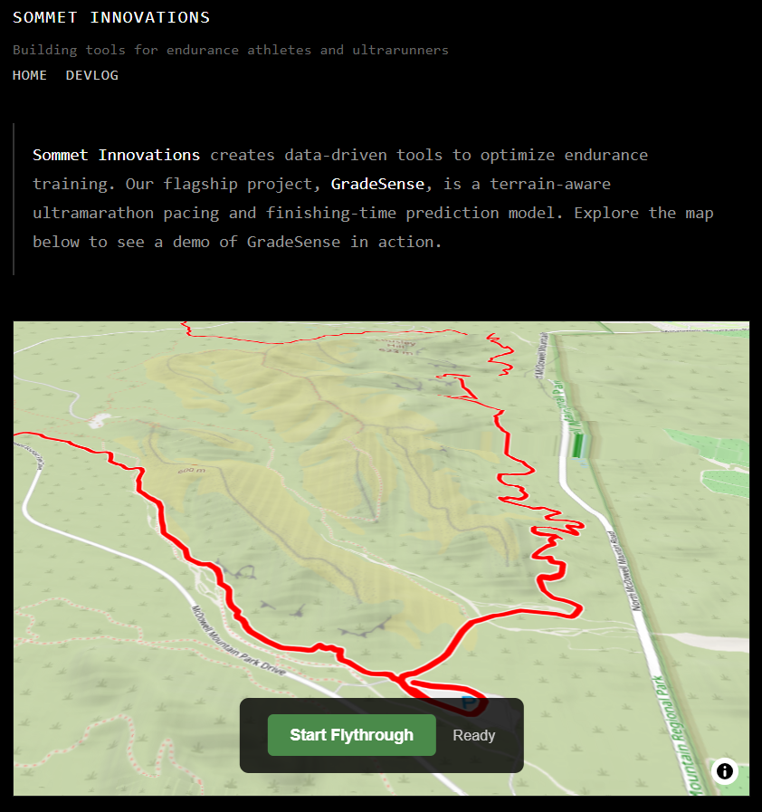

Sisyphus
2026-01-03
TL;DR
- Successfully added elevation to the map using RGB terrain tiles.
- Wrote a DEM → RGB tile conversion script.
- Elevation renders correctly but looks low-quality and grainy.
- Still investigating the root cause.
The Long Story
This felt like a Sisyphus day: real forward progress, but the core problem isn’t solved yet.
I converted a DEM into RGB elevation tiles and got them rendering in the map. That part works. I now have actual elevation data driving a 3D view and a flythrough, which is a meaningful milestone.
The problem is quality. The terrain looks grainy, and hillshading exaggerates it even more.
Possible causes: - The source DEM is only 10 m resolution. - Quantization or interpolation artifacts during RGB encoding. - Smoothing is either insufficient or happening at the wrong stage. - 256×256 tile resolution may be too coarse.
I don’t yet know which step is responsible, or if it’s a combination.

So: elevation exists, the pipeline works, and the result is usable—but not acceptable. The boulder moved uphill today, but it’s still not at the top.